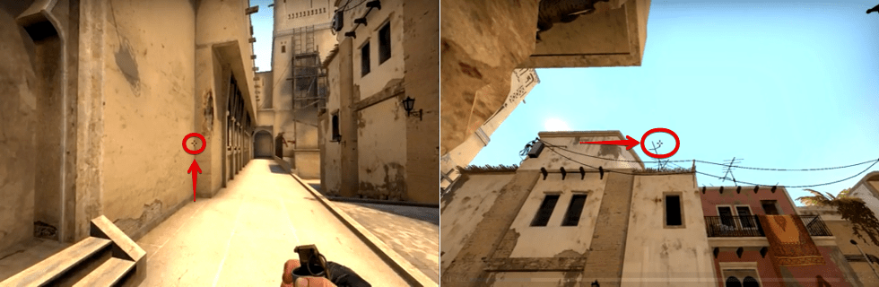

Плент А
- Смок на «голову»
Такая раскидка смоков на Мираже отлично скрывает позицию лестницы, которая позволяет защищать точку «А» на карте КС:ГО от вражеской агрессии. Для команды КТ лестница разрешает контролировать ситуацию. Враг с AWP на этой позиции способен стать настоящей проблемой для вашего перехода на точку «А». Бросить смок на карте Мираж в КС:ГО на «голову» просто. Достаточно забраться на угол уступа, прицелиться вверх и бросить без прыжка.
- Смок от железной двери на КТ
Дым от смоков полностью закрывает обзор карты Мираж в КС:ГО на точку А, при чем не только с джангла, но и коннектора. Это облако задерживает ретейк, а также позволяет безопасно выйти на сам плент. В совокупности с дымом на лестнице можно лишить врага практически 100% обзора с джангла и коннектора. Для броска следует пройти по парапету и стать рядом с правым окном. Затем поднять прицел, развернутся так, чтобы он оказался точно посередине двух выступов и кинуть гранату без прыжка.
- Смок с парапета на джангл и коннектор
Дым от смоков полностью закрывает обзор карты Мираж в КС:ГО на точку А, при чем не только с джангла, но и коннектора. Это облако задерживает ретейк, а также позволяет безопасно выйти на сам плент. В совокупности с дымом на лестнице можно лишить врага практически 100% обзора с джангла и коннектора. Для броска следует пройти по парапету и стать рядом с правым окном. Затем поднять прицел, развернутся так, чтобы он оказался точно посередине двух выступов и кинуть гранату без прыжка.
Плент Б
- Смок со ступенек на скамейку
Дым от смоков дает возможность попасть на точку «B» более безопасным способом по сравнению с остальными выходами, когда находясь на скамейке, открывается хороший обзор на выход из апартаментов. Также этот смок в сочетании с другими дымами, разрешает скрытно заложить взрывчатку под апартаменты.Чтобы максимально точно бросить гранату на Мираже со ступенек на скамейку нужно встать рядом со столбом, прицелиться правее нижней границы выступа высокой башни и кинуть дымовую шашку без прыжка.
- Смок из окна апартаментов на плент
На Мираже в CS:GO данный смок блокирует обзор любого члена КТ, который находится на пленте или наблюдает за балконом из-за колонн плента, а также позволят заложить взрывчатку в облако либо перед ним, чтобы иметь отличный плент под апартаменты.Чтобы правильно выполнить эту раскидку на Мираже следует подойти к окну в апартаменты и выставить прицел на дальний край правой лутки. Далее нужно развернуться против часовой стрелки, где-то на 90 градусов, поднять прицел до уровня двух кабелей и расположить его по левую сторону от них, а затем швырнуть дымовую гранату.
Mid
- Смок с Т-спавна на верх мида
Данная раскидка смоков на шорт в Мираже с Т-спавна позволяет в начале или середине раунда получить контроль над мидом. Дым блокирует не только видимость игроку в окне, но и каждому КТ, который на шорте играет агрессивно. Также кинув флешку либо коктейль молотова на коннектор, у вас появляется шанс безопасно добраться до тележки на миду. Чтобы точно швырнуть дымовую гранату на Мираже с Т-спавна на верх мида, нужно стать в угол и установить прицел немного выше правой части антенны, немного касаясь его нижней вертикальной линии.
- Смок с Т-спавна в окно
Подобные раскидки на Мираже в КС:ГО весьма трудны в выполнении, но они полностью себя оправдывают. Дым плотно закрывает позицию окна еще до представления командой КТ происходящего на миду, тем самым облегчая вам контролировать мид. Серое облако в совокупности с остальными разновидностями дымов, позволит вам утаить у КТ больше количество важной информации, из-за чего соперник вынужден будет играть агрессивно и допускать ошибки.Для броска смоков на Мираже с Т-спавна в окно следует стать по центру третьего углубления в стене, развернуться на 180 градусов, выдернуть чеку, поднять прицел на уровне антенны, немного отступить влево и с разбега кинуть дымовую шашку, когда прицел опустится до ограждения.